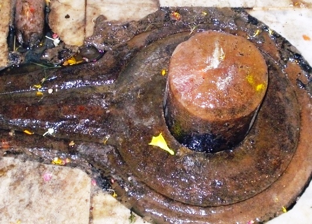

<?xml version="1.0" encoding="UTF-8"?><rss version="2.0"
	xmlns:content="http://purl.org/rss/1.0/modules/content/"
	xmlns:wfw="http://wellformedweb.org/CommentAPI/"
	xmlns:dc="http://purl.org/dc/elements/1.1/"
	xmlns:atom="http://www.w3.org/2005/Atom"
	xmlns:sy="http://purl.org/rss/1.0/modules/syndication/"
	xmlns:slash="http://purl.org/rss/1.0/modules/slash/"
	>

<channel>
	<title>Til Parneshwar &#8211; Varanasi Temples</title>
	<atom:link href="index.html" rel="self" type="application/rss+xml" />
	<link>../../../../../index.html</link>
	<description>Temples of Varanasi as referred to in Kashi Khand</description>
	<lastBuildDate>Thu, 19 Jun 2025 05:16:46 +0000</lastBuildDate>
	<language>en-US</language>
	<sy:updatePeriod>hourly</sy:updatePeriod>
	<sy:updateFrequency>1</sy:updateFrequency>
	<generator>https://wordpress.org/?v=4.6.29</generator>
	<item>
		<title>TIL PARNESHWAR</title>
		<link>../../../../../shiva-temples/til-parneshwar/index.html</link>
		<pubDate>Tue, 11 May 2010 07:16:05 +0000</pubDate>
		<dc:creator><![CDATA[admin]]></dc:creator>
				<category><![CDATA[Other Shiva Temples (S-Y)]]></category>
		<category><![CDATA[Shiva Temples]]></category>
		<category><![CDATA[Til Parneshwar]]></category>
		<category><![CDATA[til]]></category>

		<guid isPermaLink="false">../../../../../p=488.html</guid>
		<description><![CDATA[After the few batches of Shiv Gans failed to return, Lord Shiva sent few more batches of Shiv Gans from Mandarachal to Kashi.  (Regarding deputation of Shiv Gans to Kashi, devotees are requested to refer to Kukkuteshwar Ling). These Shiv Gans also decided to settle down in Kashi and they installed Shiv Lings which came [&#8230;]]]></description>
				<content:encoded><![CDATA[<p>After the few batches of Shiv Gans failed to return, Lord Shiva sent few more batches of Shiv Gans from Mandarachal to Kashi.  (Regarding deputation of Shiv Gans to Kashi, devotees are requested to refer to Kukkuteshwar Ling).</p>
<p>These Shiv Gans also decided to settle down in Kashi and they installed Shiv Lings which came to be known after their names. One Shiv Gan named Til Parn installed a Shiv Ling and started worshipping Lord Shiva.  This Ling came to be known as Til Parneshwar.  Kashi Khand, Chapter 53 states that a devotee who worships Til Parneshwar is absolved of all his sins.</p>
<p></p>
<p style="text-align: center;"><strong>(TIL PARNESHWAR)</strong></p>
<p><strong><span style="text-decoration: underline;">LOCATION OF TIL PARNESHWAR</span></strong></p>
<p>Til Parneshwar is located just near the main entrance of Durga Devi Temple at Durga Kund,  towards the right side, near a shop selling bangles.  Durga Kund is a famous landmark and people can travel upto this place by cycle rickshaw/auto or car.</p>
<p>&nbsp;</p>
<p><strong>Please watch our YouTube Video about Til Parneshwar at following Link</strong></p>
<p>&nbsp;</p>
<p><a href="https://www.youtube.com/watch?v=J4j53uVdNwo">https://www.youtube.com/watch?v=J4j53uVdNwo</a></p>
<p>&nbsp;</p>
<p>&nbsp;</p>
<p><strong><span style="text-decoration: underline;">TYPES OF POOJA</span></strong></p>
<p>The temple is open for worship throughout and people can perform pooja on their own.</p>
]]></content:encoded>
			</item>
	</channel>
</rss>
